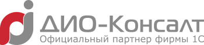

DIO-Desk
Обращения, задачи и работа
сервисной команды
и подготовить действия

КОРПОРАТИВНЫЕ ИНФОРМАЦИОННЫЕ СИСТЕМЫ
Разрабатываем корпоративные информационные системы и проверяем, как ИИ помогает выполнять конкретную работу.
Мультиплатформа
ДИО-Консалт
Обращения, задачи и работа
сервисной команды
Создание курсов
и обучение слушателей
Общая точка работы с агентами: ИИ-чаты DIOS.
Подключаемые MCP-плагины дают доступ к инструментам сервисов.
«Что нужно сделать
по заявке и кому
поручить работу?»
Агент обращается к данным DIO-Desk
через инструменты MCP.
Заявка, связанные задачи, комментарии
и текущие статусы
Декомпозиция и создание задач по заявке
Опыт по завершённым задачам и текущая
загрузка, с объяснением рекомендации
Назначение, смена статуса и комментарий проходят через правила DIO-Desk.

Пользователь выбирает подключения, а агент получает доступные инструменты.
Следующий шаг: ИИ-чат как виджет внутри DIOS, рядом с текущей работой.
Сервисная команда
Фрагменты записи,
реплики и таймкоды
Агент читает расшифровку
и выделяет действия
Диагностика и результат
в рабочей задаче
Договорённость становится
конкретным поручением
Создание через MCP-инструменты DIO-Desk
В одном диалоге агент соединяет расшифровку встречи и инструменты работы с задачами.
«Что слушатель должен
уметь после курса?»
«Самостоятельно разбирать обращения
и находить причины типовых сбоев»
Аудитория, начальный уровень,
цели и обязательные темы
Документы преподавателя,
инструкции и предметные примеры
Итоги интервью и контекст курса
запускают генерацию
Эксперт проверяет содержание.
ИИ-наставник помогает слушателю разбирать материал и выполнять задания.
Цели и методический
план курса
Структура модулей,
уроков и учебных блоков
Теория, примеры,
схемы и задания
Собранные модули
и уроки для эксперта
Материалы преподавателя, находки из интернета и созданная теория.
Агенты используют общий контекст и возвращаются к знаниям при генерации.
Как передать знания
исследователя тем,
кто создаёт уроки?
В DIO-Courses связали агентов
общей памятью курса.
Материал, источник и тип знания
попадают в базу курса.
Поиск по смыслу и ключевым словам
возвращает релевантные фрагменты.
Созданная теория возвращается в базу
и становится частью контекста курса.
Знания исследования сохраняются вместе с источниками и участвуют в дальнейшей генерации.
| Сбой | Как решили | Результат |
|---|---|---|
| Недоступен MCP-сервис | Изолируем отказ подключения. Ошибку вызова передаём агенту. | Диалог продолжается с доступными инструментами. |
| Прервалась генерация курса | Сохраняем контрольные точки и возобновляем незавершённый граф. | Продолжаем работу с сохранённого этапа. |
| Зависла обработка длинной записи | Контролируем активность шагов. Используем таймауты и повторы. | Обнаруживаем зависание и повторяем проблемный шаг. |
Состояние процесса, повторы и изоляция отказов встроены в выполнение задач.
В интервью и диалоге наставника
сжимаем историю в структурированное резюме.
Привязываем знания к конкретному курсу.
При поиске применяем фильтр его контекста.
Проверяем доступность MCP-подключений.
DIO-Desk применяет права пользователя.
Память курса, история диалога и права пользователя задают рабочий контекст агента.
Рабочее общение с контекстом
обращений и задач
Концепция сервиса. Функции запланированы.
Доступ к агенту внутри DIOS
без ухода из рабочего контекста
Включая DIO-Courses
и общие сценарии сервисов
Подтверждение действий,
фоновая работа и общая память
Рабочие процессы, корпоративное обучение
и ИИ-агенты в одной экосистеме